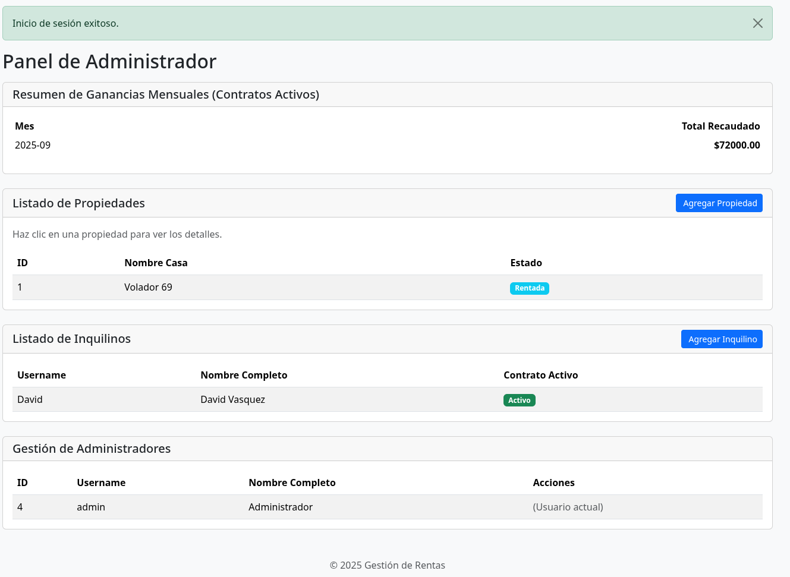
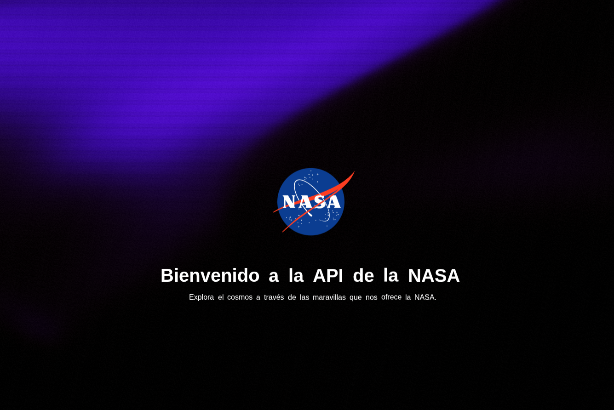
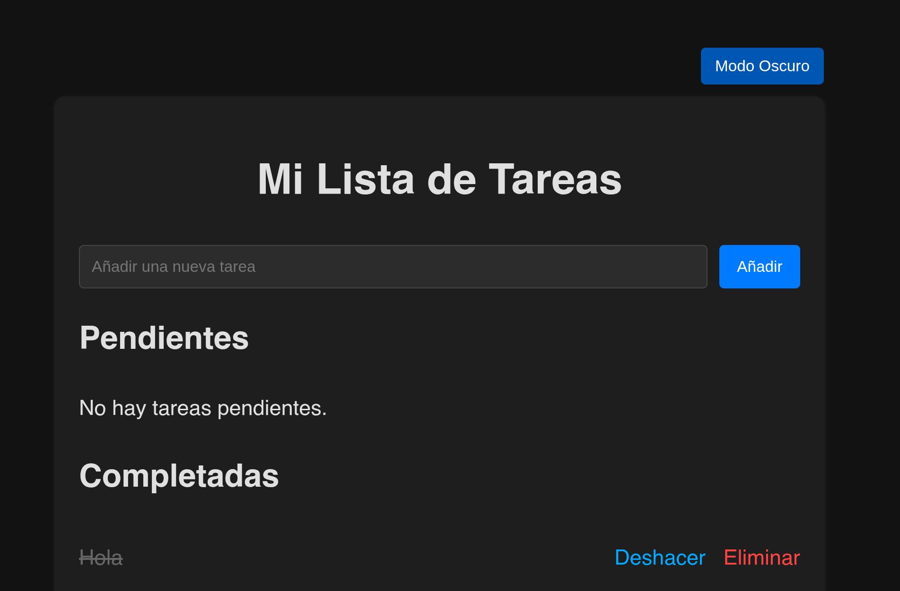
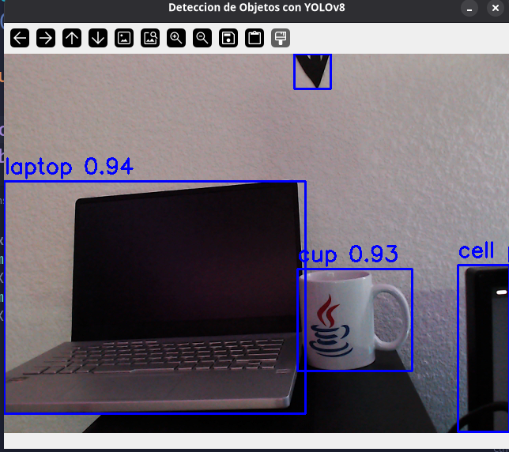
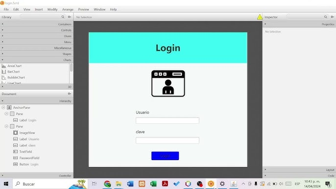
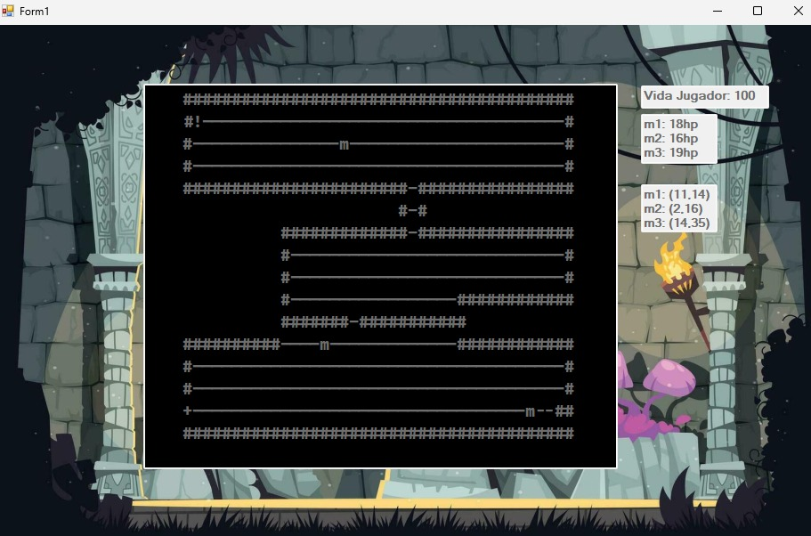
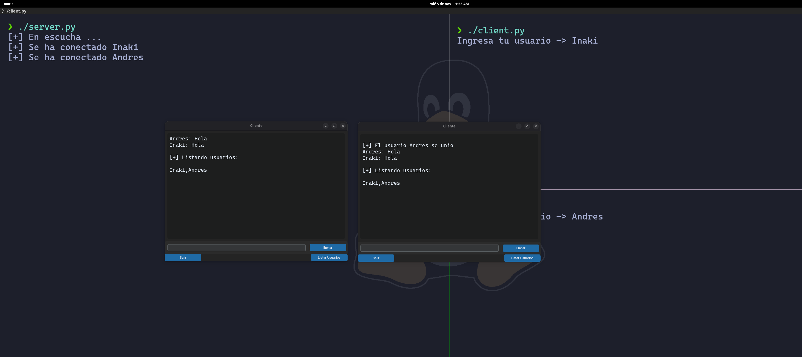

Sobre Mí

Perfil Profesional
Desarrollador orientado a resultados, con experiencia en programación orientada a objetos y desarrollo backend, adquirida mediante la realización de proyectos personales en entornos Linux. Apasionado por la innovación tecnológica y la resolución de problemas complejos, con capacidad demostrada para transformar ideas en soluciones funcionales y eficientes.
Busco incorporarme a un equipo profesional donde pueda aplicar mis conocimientos técnicos y seguir desarrollándome, con un enfoque claro en el desarrollo backend. Mi objetivo es especializarme en la construcción de sistemas robustos y escalables, en lugar de roles full-stack.
Habilidades y Herramientas
Poseo experiencia práctica en un amplio y diverso conjunto de frameworks y librerías de desarrollo. Empleo Spring Boot para diseñar y construir servicios backend escalables en el ecosistema Java, y Flask para el desarrollo rápido de APIs y aplicaciones web con Python. Para aplicaciones de escritorio, tengo conocimientos en JavaFX y CustomTkinter. Además, utilizo herramientas como OpenCV para el procesamiento de imágenes y la ejecución de proyectos de visión por computadora.
Abierto a nuevas oportunidades laborales – no dudes en revisar mi CV:
Descargar CVPortafolio

Programa de Administración de Rentas con Python y Flask
Sistema web para administrar propiedades de alquiler con Python y Flask. Centraliza la gestión de propiedades, inquilinos y contratos, automatizando el seguimiento de pagos y la generación de reportes. Incluye un panel de control intuitivo y utiliza PostgreSQL.

Página de la NASA con Flask
Aplicación web interactiva que consume la API de la NASA para explorar el cosmos. Permite descubrir la 'Foto Astronómica del Día' (APOD), obtener información sobre objetos cercanos a la Tierra y explorar una galería de imágenes del espacio. Desarrollada con Python y Flask.

To-Do App (Python y Flask)
Aplicación web minimalista para la gestión de tareas diarias con Python y Flask. Permite organizar actividades con funcionalidades CRUD completas a través de una interfaz limpia, implementando una API RESTful básica.

YOLO Vision
Sistema de detección de objetos en tiempo real con el modelo YOLO. Procesa video de cámaras web o archivos, identificando y clasificando objetos. Desarrollado en Python con OpenCV, es personalizable para diferentes modelos de YOLO y fuentes de video.

Sistema de Gestión de Inventario (Python GUI con BD)
Aplicación de escritorio para la gestión de inventarios con Python y una GUI intuitiva. Permite el control de productos, categorías y stock, conectándose a una base de datos relacional para la persistencia de datos.

Java FX
Colección de proyectos de escritorio con JavaFX que implementan el patrón MVC. Demuestran habilidades en el desarrollo de software modular, mantenible y escalable en Java.

Juego en C#
Juego de rol y exploración de mazmorras (dungeon crawler) en C#. Aplica POO para modelar personajes, IA de enemigos y generación procedural de niveles. Su arquitectura extensible permite añadir nuevos contenidos fácilmente.

Chat multiusuario con cifrado SSL
Este proyecto es un chat multiusuario seguro, implementado en Python con la librería CustomTkinter para la interfaz gráfica. Utiliza cifrado SSL para proteger las comunicaciones entre los clientes y el servidor, garantizando la privacidad e integridad de los mensajes. Permite a múltiples usuarios conectarse simultáneamente y comunicarse en tiempo real de forma segura.
Educación
Ingeniería en Sistemas Computacionales
UNITEC Campus Atizapán — 2021 - 2025
Estudiante activo de Ingeniería en Sistemas Computacionales, enfocado en el desarrollo de software, inteligencia artificial y ciberseguridad. Participación en proyectos académicos y extracurriculares, aplicando conocimientos en programación, bases de datos y redes.
Certificación en Linux
Hack4u.io — 25/07/2025
Obtuve una comprensión integral del sistema operativo Linux, desde los fundamentos y la navegación del sistema hasta la administración avanzada de procesos, redes, y la configuración de servicios como SSH. Este curso me proporcionó las habilidades para gestionar y asegurar servidores Linux de manera eficiente.
Código de certificado: 2154-4957-5308-3366
Certificación Fundamentos de IA de Oracle
Oracle — 25/10/2025
Con la certificación de Fundamentos de IA de Oracle Cloud Infrastructure (OCI), adquirí conocimientos sobre los conceptos fundamentales de la inteligencia artificial (IA) y el aprendizaje automático (AA). Pude profundizar en la aplicación práctica de estas tecnologías en Oracle Cloud Infrastructure. Este curso me proporcionó una base sólida en IA y AA sin necesidad de experiencia técnica previa.
Certificado en Python Ofensivo
Hack4u.io — 2024
Certificado de Python Ofensivo en Hack4u.io, enfocado en el uso de Python para la seguridad ofensiva y el hacking ético. Adquirí conocimientos en la creación de herramientas de seguridad, automatización de ataques, análisis de vulnerabilidades y desarrollo de exploits, aplicando Python en escenarios de ciberseguridad.
Certificación en GitHub Foundations
GitHub — En proceso
Actualmente me encuentro en proceso de obtener la certificación de GitHub Foundations. Este curso valida mi comprensión de los conceptos fundamentales de Git y GitHub, incluyendo control de versiones, repositorios, y el flujo de trabajo de GitHub. Estoy adquiriendo habilidades en características de colaboración como issues y pull requests, así como en desarrollo moderno con herramientas como GitHub Copilot y Codespaces. Esta certificación demuestra mi capacidad para colaborar eficazmente en proyectos de desarrollo de software.
Habilidades
Lenguajes de Programación
Desarrollo Frontend
IDEs
Bases de Datos
Herramientas
Idiomas
Español
Inglés
Contacto
¿Interesado en colaborar o tienes alguna pregunta? ¡No dudes en contactarme!
+52 5510310275